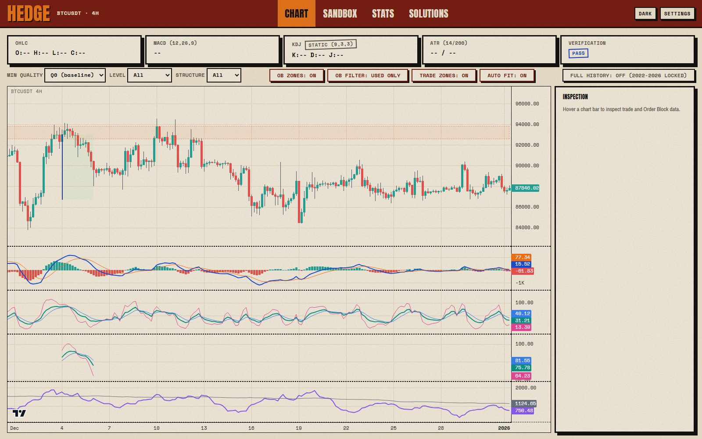
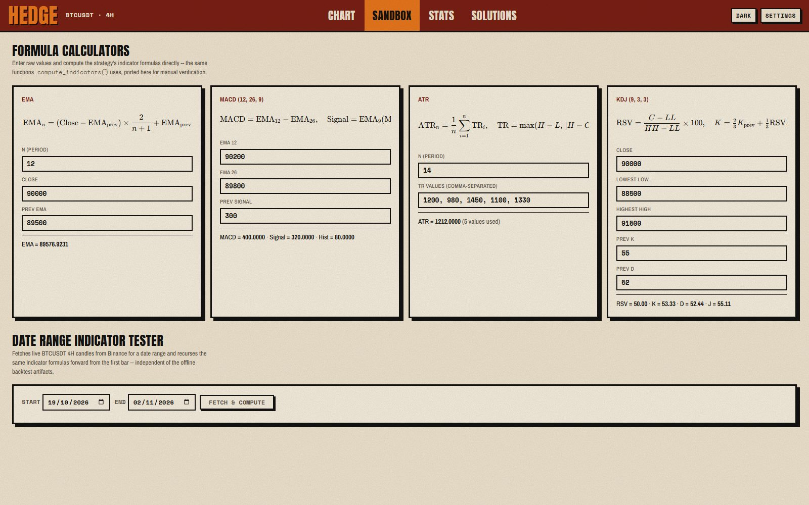
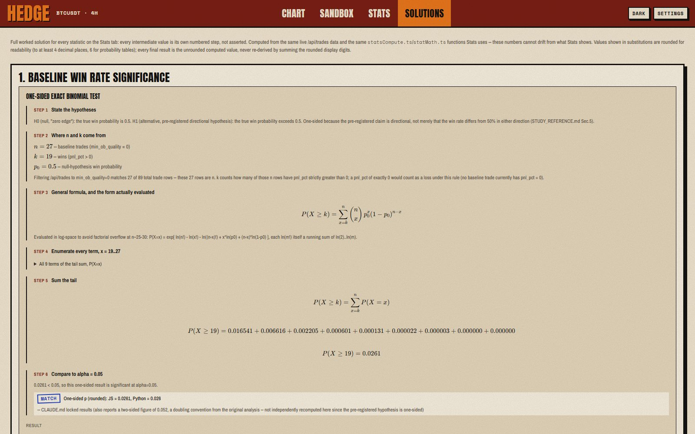

01
Replay the chart
4-hour candles with MACD, KDJ and ATR underneath, and the order-block zones drawn on top.
Replays a Bitcoin trading rule on past candles and tests whether it really beat buying every week.


4-hour candles with MACD, KDJ and ATR underneath, and the order-block zones drawn on top.

Type in raw values and watch the same indicator maths the bot uses.
Weekly buying ends richer, but the strategy falls far less and is in the market 2.6% of the time.

Each statistic is shown step by step, with a MATCH stamp when Python and the page agree.
It only simulates trades on history. It never places a real order.